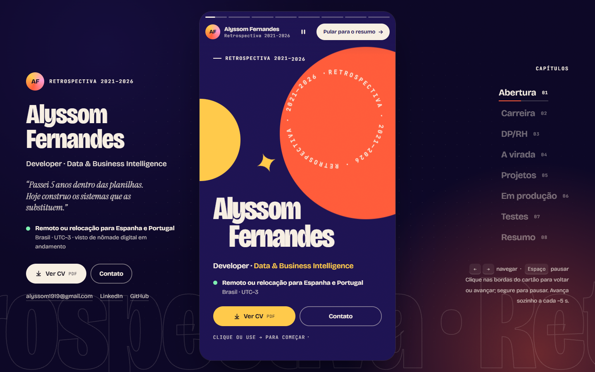
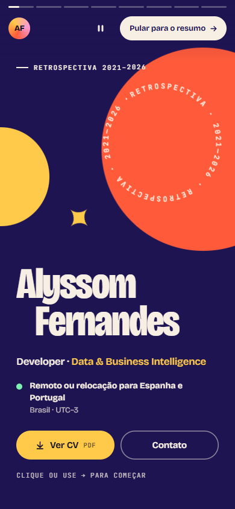

Retrospectiva stories · formato "retrospectiva do ano"
A carreira em 8 telas cheias que avançam sozinhas, com números que se montam e um cartão-resumo no fim. No desktop, um painel fixo mantém nome, CV e contato sempre à vista.
- Forte em
- celular, cor, ritmo, dá para "assistir" em 40 segundos
- Atenção
- conteúdo em sequência (o recrutador depende do botão "Pular para o resumo")